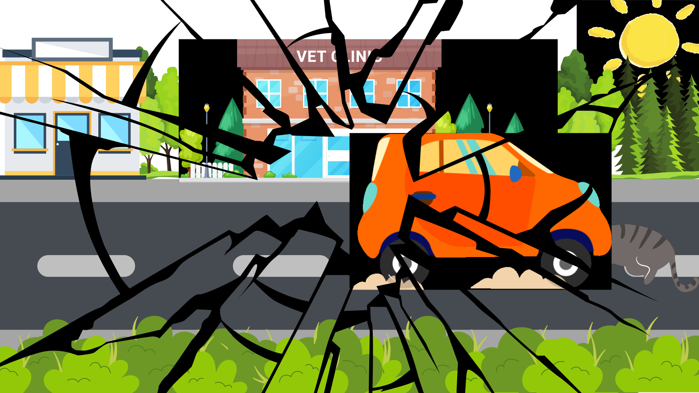
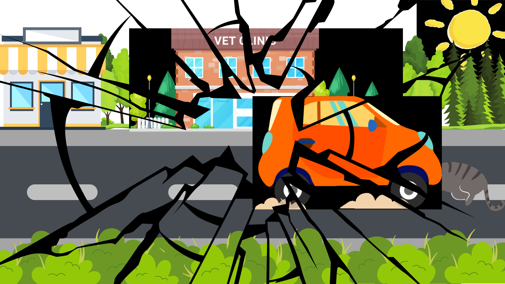
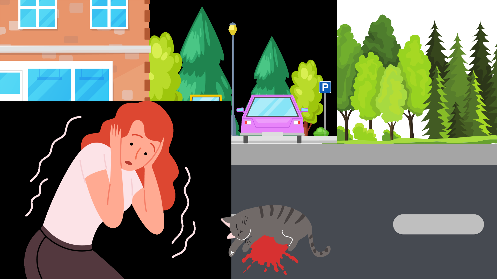
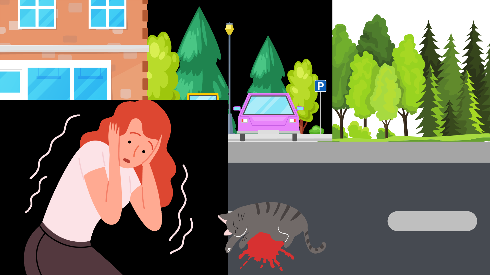

Anesthesia Machine


Anastesi Inhalasi memiliki banyak jenis alatnya dari berbagai macam merk. Pada pembahasan ini, kita akan mengambil salah satu contoh alat anastesi inhalasi ber merk RWD.
ATTENTION!
Untuk kesehatan hewan, disarankan untuk menggunakan Rebreathing circuit ketika berat hewan lebih besar dari atau sama dengan 7 kg, dan Non-rebreathing circuit ketika beratnya kurang dari 7 kg.
Cara Memasang Rebreathing circuit
1. Sambungkan Non-rebreathing circuit port dan main circuit inlet dengan silica gel tube
2. Pilih breathing bag sesuai dengan berat hewan dan dipasang di breathing bag mouth.
3. Sambungkan selang lain dari gas filter canister ke APL Valve
Pastikan APL Valve terbuka saat menggunakan rebreathing circuit. Dianjurkan untuk membuka APL Valve berlawanan arah jarum jam agar terbuka penuh. Pastikan APL Valve tertutup saat memeriksa bocornya mesin anastesi.
Cara Memasang Non-Rebreathing Circuit
1. Sambungkan Non-rebreathing circuit ke Non rebreathing circuit port
2. Pilih breathing bag sesuai dengan berat hewan dan pasang ke circuit
3. Pada bagian gas filter canister port di circuit sambungkan ke gas filter canister
4. Untuk membuka dan menutup, Valve diputar. Putar arah jarum jam untuk membuka. Pastikan valve terbuka saat menggunakan Non-rebreathing circuit
Menambahkan Anastesi
Hal hal yang harus di perhatikan :
1. Hanya anastesi khusus yang dapat ditambahkan
2. Sebelum menambahkan anstesii, matikan oxygen flowmeter control valve sampai akhir ( closed)
3. Untuk penggunaan pertama atau jika evaporator sudah lama tidak digunakan setelah dikosongkan, Kita perlu mengisi botol penuh (100ml) anestesi dan menunggu 1 jam sebelum menggunakannya.
4. sebelum digunakan, perlu dipastikan bahwa level cairan anestesi berada di antara dua garis pada bagian transparan di vaporizer.
5. Pastikan tombol persen volume pada vaporizer anestesi ke posisi 0
6. Putar oxygen flowmeter control valve searah jarum jam sampai akkhir (off)
7. Putar dan lepaskan penutup vaporizer.
8. Tuang isoflurine yang sesuai dengan hati-hati ke dalam port pengisi. Isi sampai batas.
9. Tutup dan kencangkan penutup vaporizer
10. Stiker di sisi kanan evaporator menunjukkan langkah untuk pemberian dosis
11. Pasang Selang Oksigen pada hewan yang akan dioperasi.
12. Tekan dial lock key untuk menyesuaikan konsentrasi gas anestesi dari skala 0
13. Putar dial dan sesuaikan dengan konsentrasi yang tepat
14. Ketika dial disesuaikan ke skala 0, kunci akan dikunci lagi.
15. Setelah selesai operasi, kembalikan semua ke pengaturan 0.
16. Bersihkan dan rapihkan kembali mesin anastesi inhalasi.
Agar mesin anastesi inhalasi tidak cepat rusak, dibutuhkan perawatan yang baik. Di sarankan untuk memperhatikan pemeliharaan alat perminggu. Yang harus diperhatikan dalam pemeliharaan mingguan adalah :
1. Gunakan kain pembersih yang bersih (dengan larutan pembersih netral) untuk membersihkan permukaan mesin anastesi
2. Memberihkan debu dan kotoran lainnya pada permukaan evaporator, terutama disekitar dial.
3. Harap mengecek kebocoran.
4. Periksa kebersihan dan stok sumber oksigen.
5. Periksa 02 absorber canister, apakah habis? Dan perlu diganti jika total waktu penggunaan lebi dari 12 jam. Jika tidak digunakan selama 12 jam dalam 1 bulan, maka perlu diganti juga.
6. Gas filter Canister perlu ditimbang dan diganti secara berkala. Ketika beratnya mencapai 1000g, kapasitas adsorpsi gas akan berkurang dan gas filter baru perlu diganti.

Menghubungkan hewan seperti tikus, mencit, anjing, kucing dengan tabung anestesi dan perangkat pasokan udara lainnya, setiap set berisi 17 spesifikasi intubasi trakea yang berbeda.
Lihat ProdukMonitor Veteriner RM700/RM800/RM800T dilengkapi dengan algoritma khusus untuk dokter hewan dan desain yang kompak. Memenuhi persyaratan utama Anda dalam berbagai situasi pasien hewan. Parameter ganda termasuk SpO₂, EKG, NIBP, TEMP, RESP, ETCO₂ Microflow.
Lihat ProdukDigunakan untuk induksi anestesi, penyelamatan pernapasan kucing, anjing, dan hewan seukuran lainnya.
Lihat ProdukR640 hanya digunakan dalam penelitian hewan atau bidang kedokteran hewan, yang merupakan pilihan yang sangat baik untuk anestesi di luar ruangan, seperti Ruang Perawatan, Ruang Pencitraan, Ruang Persiapan Anestesi, dan Klinik Spesialis Kucing.
Lihat ProdukNah, sekarang kalian udah pada tahu kan apa itu alat anestesi inhalasi veteriner dan cara kerjanya? Singkatnya, alat ini digunakan untuk membuat hewan peliharaan kita nyaman selama operasi atau perawatan medis.
Tapi, dunia paramedik veteriner juga punya banyak alat keren lainnya, nih. Contohnya, ada alat pemindai X-ray hewan, Roentgen, dan masih banyak lagi. Kalian bisa cek alat-alat itu lewat berbagai media pembelajaran lainnya, ya! Semangat terus dalam belajar, teman-teman! Veti disini undur diri, sampai jumpa!
Cerita ini dibuat berdasarkan khayalan fiktif semata segala unsur dalam cerita ini tidak nyata dan tidak benar benar terjadi, cerita ini ditulis untuk menambah wawasan tentang alat alat dalam paramedik veteriner
 

 
